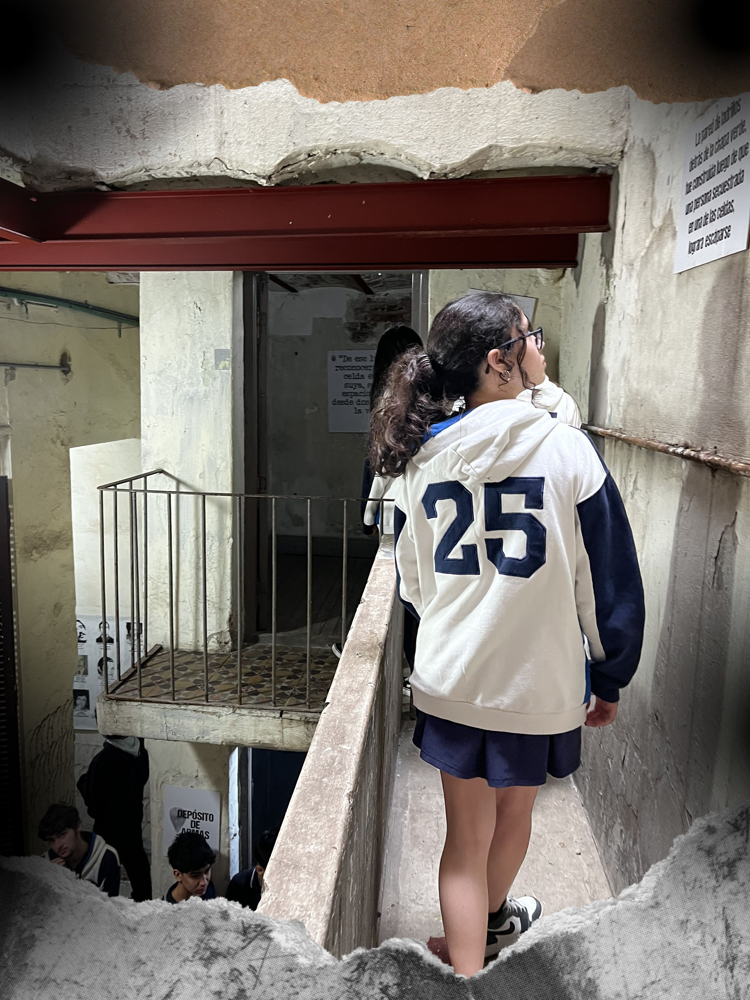

Visita al Espacio de Memoria Virrey Cevallos. Concurrieron los alumnos 5º A y 5º B
Por Baduy, Camila de 5A
El día 15 de mayo, los cursos de quinto año del Colegio Espíritu Santo realizaron una excursión al Espacio para la Memoria Virrey Cevallos. Este lugar funcionó como un centro clandestino de detención y tortura durante la última dictadura militar argentina. Durante la visita, recorrimos cada una de las habitaciones del inmueble, donde pudimos observar dos celdas enfrentadas, salas de tortura, el comedor y la cocina utilizados por los represores, así como una sala de interrogatorios. Aunque este centro era utilizado mayormente para detenciones temporales, hubo prisioneros que permanecieron allí durante períodos prolongados. Tal es el caso de Miriam Liliana Lewin, quien estuvo detenida durante diez meses antes de ser trasladada a la ESMA, y de Osvaldo López, otro sobreviviente que logró escapar del centro trepando por las paredes. Años más tarde, López colaboró activamente en el reconocimiento y la recuperación del lugar como espacio de memoria. También se habló sobre los hermanos Río, propietarios del edificio, quienes alquilaron la casa a un agente de inteligencia de la Fuerza Aérea, actuando así como cómplices en el funcionamiento del centro clandestino. Sin embargo, no fueron juzgados ni condenados, ya que alegaron haber firmado un contrato de alquiler “normal”, quedando exentos de responsabilidad penal. Este recorrido fue profundamente impactante tanto para los alumnos como para los profesores presentes, ya que permitió reflexionar sobre una etapa oscura de nuestra historia reciente, que lamentablemente aún se repite en distintas partes del mundo.